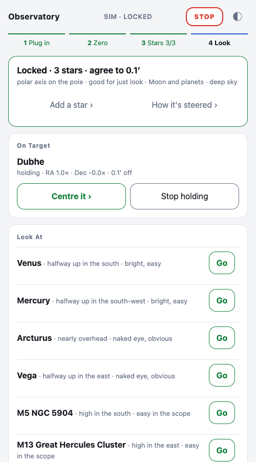
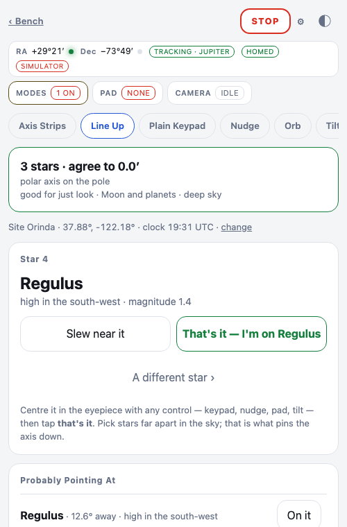
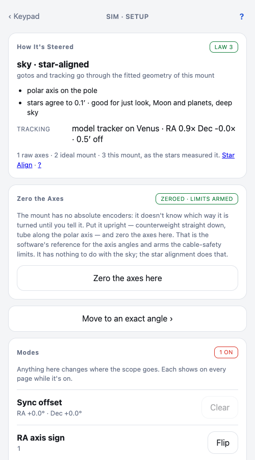

Star Align: a mount set down anyhow
Polar alignment is the part of an equatorial mount that makes people give up. You crouch behind the tripod, squint through a little scope at Polaris, and turn knobs until a reticle lines up. I wanted to skip it. Set the mount down roughly north, roughly at my latitude, and let the stars do the rest.
That's what Star Align is. The software behind it is Controller.Sky.Model, Lineup, Pointing and Tracker, in apps/controller/lib/controller/sky/.
The model
An EQ6-R has no absolute encoders, so step one is telling it which way it's turned: stand it upright, counterweight down, tube along the polar axis, and zero the axes. That's the mount's reference, not the sky's.
Then the geometry. A German equatorial is two axes at right angles. The polar axis points somewhere; on a perfectly aligned mount that's the celestial pole, but I don't assume that. The model works in an east-north-up frame and has four parameters: the polar axis altitude and azimuth, plus a zero offset for each encoder.
# apps/controller/lib/controller/sky/model.ex
@doc "Where the tube points (ENU unit vector) for encoder angles in degrees from home."
def tube_vec(params, signs, theta_ra, theta_dec) do
h = (signs.ha_sign * theta_ra + params.off_ra) * @deg
d = (signs.dec_sign * theta_dec + params.off_dec) * @deg
{p, e, s} = frame(params)
# u(H) sweeps from the meridian (s) toward the west (−e) as H grows
u = add(scale(s, :math.cos(h)), scale(e, -:math.sin(h)))
add(scale(p, :math.cos(d)), scale(u, :math.sin(d)))
end
Forward: two encoder angles give a direction in the sky. Inverse: a direction in the sky gives two encoder solutions, because a GEM can reach the same spot from either side of the pier. With an ideal mount (axis on the pole, zero offsets) it collapses to the plain first-order model.
The fit
Each star you centre is a sample: where the encoders were when the tube was on a known direction. The fit is Levenberg-Marquardt on the residual vectors, numeric Jacobian, Gauss-Jordan solve. It's a tiny problem and the code says so: simplicity over speed.
With one star only the offsets move. With two or more, all four parameters are free, and the fit starts from a ring of axis headings so a mount pointed 90° wrong is still found.

Axis signs are a config guess until the sky says otherwise. A wrong RA sign can't be absorbed by the geometry, so with three stars it shows as degrees of disagreement and the other combinations get tried. A wrong Dec sign is sneakier: the geometry absorbs it as an RA offset near 180°, which means the model thinks the counterweight is up when it's down and would pick the wrong side of the pier for every goto. So that case is detected by the offset, flipped, and refitted.
The grade comes from the rms of the residuals. Under 30 arcminutes is "just look", under 10 is "Moon and planets", under 2 is "deep sky". The same words appear on the page and in the docs.
The tracker
On a polar-aligned mount tracking is one motor at sidereal rate. On a mount set down anyhow the target drifts in both axes, so after a goto the software tracks through the model: every half second it asks where the encoders should be now and ten seconds from now, runs both motors at the rates that get there, and adds a gentle correction for whatever error crept in.
Every slew the tracker issues carries the driver's dead-man and is refreshed inside the 900 ms grace. If the tracker process dies or stalls, the motors stop on their own within a second.
# apps/controller/lib/controller/sky/tracker.ex
# the driver's hold grace is 900 ms: refresh well inside it
@tick_ms 500
@lookahead_s 10.0
# correct the accumulated error over this many seconds
@correct_s 20.0
@max_rate 16.0
# further off than this and something else is wrong: stop, don't chase
@give_up_deg 5.0
After a goto it converges to the target. After a nudge it holds where your hand left the tube; a hand that centred the star wins over the model. It never changes sides of the pier on its own, because chasing a flip at 16× is a slew nobody asked for. Past five degrees of error it gives up and says so.

Three control laws
The Setup page has a card called How It's Steered that says which law is in charge. Law 1 is raw axes: the keypad, the strips, no sky at all. Law 2 is the sky through an ideal mount, which assumes you polar-aligned. Law 3 is the sky through this mount as the stars measured it.

The numbers were there from the start, but I couldn't see the correction. So the page now draws it: a target with the true pole at the centre and a dot where this mount's polar axis really points, the two encoder offsets, and a bar per axis for how much authority the tracker is using right now. On a perfect set-up the RA bar sits on the sidereal tick and Dec is empty. Here is the simulator with a polar axis 4.7° off and both offsets wrong on purpose: the dot is out at the second ring, and while it holds Venus the Dec bar is doing work an aligned mount would never need.

Once a star alignment exists, gotos, the RA/Dec readout, the sky map and the orb all go through it. The orb draws the solved geometry instead of the ideal one, which is how you see what the fit actually thinks your mount is doing.

What went wrong
Two stars fit more than one geometry. Two samples can be satisfied exactly by several polar-axis placements, and a couple of arcminutes of centring noise picked the wrong one on cost alone. The whole-night simulator test caught a goto landing in the wrong place after a perfect-looking two-star fit. Now, among fits within centring noise of the best, the one nearest the ideal set-up wins:
# apps/controller/lib/controller/sky/model.ex
fits = Enum.map(starts, &lm(samples, signs, &1, free))
best = fits |> Enum.map(&elem(&1, 1)) |> Enum.min()
tol = length(samples) * @noise_rad * @noise_rad
{params, _} =
fits
|> Enum.filter(fn {_, cost} -> cost <= best + tol end)
|> Enum.min_by(fn {p, _} -> axis_distance(p, start) end)
One star was graded "good for deep sky". One or two stars fit exactly whatever they are, so "agree to 0.0′" after a single star was a lie the page told with a straight face. It now says what each count buys you and only grades at three or more.
Gotos aimed at the past. A goto computed the encoder target for where the object was when the slew started. Full speed on this mount is about 3.4°/s, so a 30 second slew is 7 arcminutes of sky, which is the difference between "in the eyepiece" and "hunt for it". Pointing.slew now estimates the flight time and aims at where the object will be when it lands.
What's next
Nothing here corrects cone error or axes that aren't quite perpendicular; those want more stars and more parameters. With the axis far from the pole the field rotates in the eyepiece, which is fine for looking and a problem for exposures. And the stars I centre by eye are the truth the model is built on. Plate solving replaces my eye, and that's the next real step.